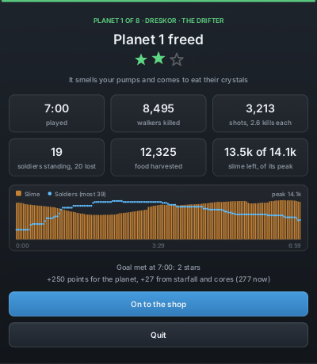
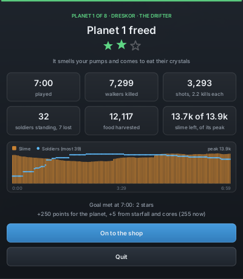
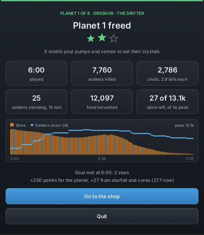
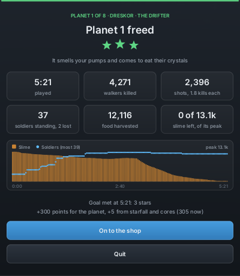

<title>Slime Follows Its Crystal</title>
<meta name="claude:viewport-fit-sides" content="cover">
<link rel="preconnect" href="https://fonts.googleapis.com">
<link rel="stylesheet" href="https://fonts.googleapis.com/css2?family=Inter:wght@400;600&family=Space+Grotesk:wght@500;700&display=swap">
<style>
:root { --bg:#f6f4ef; --card:#ffffff; --fg:#1d1b17; --muted:#6a6459; --line:#e0dbd0; --amber:#b86e00; --blue:#2c7fb8; }
@media (prefers-color-scheme: dark) { :root:not([data-theme="light"]) { --bg:#16181c; --card:#1f2228; --fg:#ece8df; --muted:#a39d91; --line:#33373f; --amber:#e9a23b; --blue:#6cb6e8; color-scheme: dark } }
:root[data-theme="dark"] { --bg:#16181c; --card:#1f2228; --fg:#ece8df; --muted:#a39d91; --line:#33373f; --amber:#e9a23b; --blue:#6cb6e8; color-scheme: dark }
body { background:var(--bg); color:var(--fg); font:15px/1.55 Inter, system-ui, sans-serif; margin:0; }
main { max-width: 980px; margin: 0 auto; padding-block: 28px 48px; padding-left:max(16px, env(safe-area-inset-left, 0px)); padding-right:max(16px, env(safe-area-inset-right, 0px)); }
h1, h2 { font-family: "Space Grotesk", Inter, sans-serif; text-wrap: balance; }
h1 { font-size: 1.9rem; margin: 0 0 6px; }
h2 { font-size: 1.25rem; margin: 34px 0 8px; }
p { max-width: 68ch; }
.lede { color: var(--muted); }
.pair { display:grid; grid-template-columns: 1fr 1fr; gap: 14px; margin-top: 12px; }
@media (max-width: 640px) { .pair { grid-template-columns: 1fr; } }
figure { margin:0; background:var(--card); border:1px solid var(--line); border-radius:10px; padding:10px; min-width:0; }
figure img { width:100%; border-radius:6px; display:block; }
figcaption { font-size: .9rem; color: var(--muted); margin-top: 8px; }
figcaption b { color: var(--fg); }
.tbl { overflow-x:auto; }
table { border-collapse: collapse; font-variant-numeric: tabular-nums; margin-top: 8px; }
th, td { text-align:right; padding: 5px 12px; border-bottom:1px solid var(--line); }
th:first-child, td:first-child { text-align:left; }
th { font-weight:600; color: var(--muted); font-size: .85rem; letter-spacing:.02em; }
.tag { display:inline-block; font-size:.78rem; letter-spacing:.04em; text-transform:uppercase; color:var(--amber); font-weight:600; }
</style>
<main>
<span class="tag">Planet 1 · the Drifter · run seed 1</span>
<h1>The slime follows its crystal</h1>
<p class="lede">Your ruling at 06:30: only the squad empties a crystal; the slime's eating never does. Your pick at 06:34 was option 1, so the slime's size now follows the crystal it covers. These are the game's own end cards, filmed on the software GPU, with the old rules ("before") and the new ones ("after").</p>

<h2>A normal game looks the same</h2>
<p>A greedy squad plays 7 minutes. The squad keeps the slime under what its crystal holds, so the new ceiling never bites, and the two graphs match: peak 14.1k before, 13.9k after.</p>
<p><b>These cards are staged.</b> The filming tool stops the game at 7:00 and puts up the "won" card so the graph can be seen. The planet was not won: about 13.5k walkers were still alive in both.</p>
<div class="pair">
  <figure><figcaption><b>Before.</b> 7:00 played, 8,495 killed, 13.5k left of a 14.1k peak.</figcaption></figure>
  <figure><figcaption><b>After.</b> 7:00 played, 7,299 killed, 13.7k left of a 13.9k peak.</figcaption></figure>
</div>

<h2>Take its crystal and it shrinks within a minute</h2>
<p>The same game, but at 3:00 the slime's crystal is emptied, as if the squad had drained it (it covered 971 crystal cells, all on that one crystal). After the change it is over its ceiling, so it stops breeding and its walkers off food starve three times as fast.</p>
<div class="pair">
  <figure><figcaption><b>Before.</b> Slime 10.2k at 3:00, 9.4k at 3:30, 5.2k at 4:00. Not freed: the filming tool stopped it at 6:00 with 27 walkers left and put up the won card. 14 soldiers lost.</figcaption></figure>
  <figure><figcaption><b>After.</b> Slime 10.2k at 3:00, 6.1k at 3:30, 2.7k at 4:00. Really freed at 5:21, every walker gone. 2 soldiers lost.</figcaption></figure>
</div>

<h2>The starts are kept</h2>
<p>Slime size with a greedy squad, three run seeds, before and after.</p>
<div class="tbl"><table>
<tr><th>Seed</th><th>1:00 before</th><th>1:00 after</th><th>2:00 before</th><th>2:00 after</th><th>3:00 before</th><th>3:00 after</th></tr>
<tr><td>1</td><td>11,261</td><td>11,593</td><td>8,663</td><td>10,308</td><td>9,078</td><td>9,477</td></tr>
<tr><td>2</td><td>15,054</td><td>15,497</td><td>13,641</td><td>13,133</td><td>13,273</td><td>12,586</td></tr>
<tr><td>3</td><td>11,282</td><td>11,336</td><td>9,448</td><td>9,439</td><td>9,360</td><td>9,465</td></tr>
</table></div>
<p>8 of 9 are within 5%. Seed 1 at 2:00 is 19% bigger, which is how one fight went; by 3:00 it is back within 5%.</p>

<h2>What did not work</h2>
<p>Raising the slime's upkeep all the time made it shrink fast, but it starved at the start too: the slime at 1:00 was 29% smaller at twice the upkeep and 52% smaller at three times. So the upkeep only rises while the slime is over its ceiling.</p>
</main>
